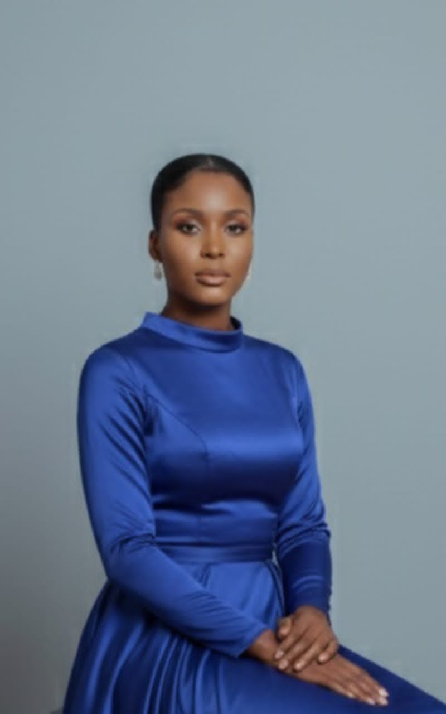

mon profil

:je suis wide. je suis une jeune etudiante passionnée par la technologie, le developpement de site web. mon objectif est de devenir une developpeuse web proffessionnelle et de mettre mes competences au service de projets numerique.
mes coordonnees
- telephone : +50931928944
- email : exiluswidna509@.com
- adresse : carradeux,ouest, HAITI
mes competences
- conception de pages web (html)
- informatique bureautique (word, excel, powerpoint
- gestion de service client et d'esprit d'equipe
- partage, rigueur et dynamisme